For Android TV and Google TV
Your TV, without the billboard.
Glasshouse replaces the ad-filled Google TV home with a calm glass one. Your apps in tinted squircles, the room washed in the colour of whatever you pick, and nothing sponsored anywhere.
≈500 KB · no network permission · Android 8+ · installed over Wi‑Fi
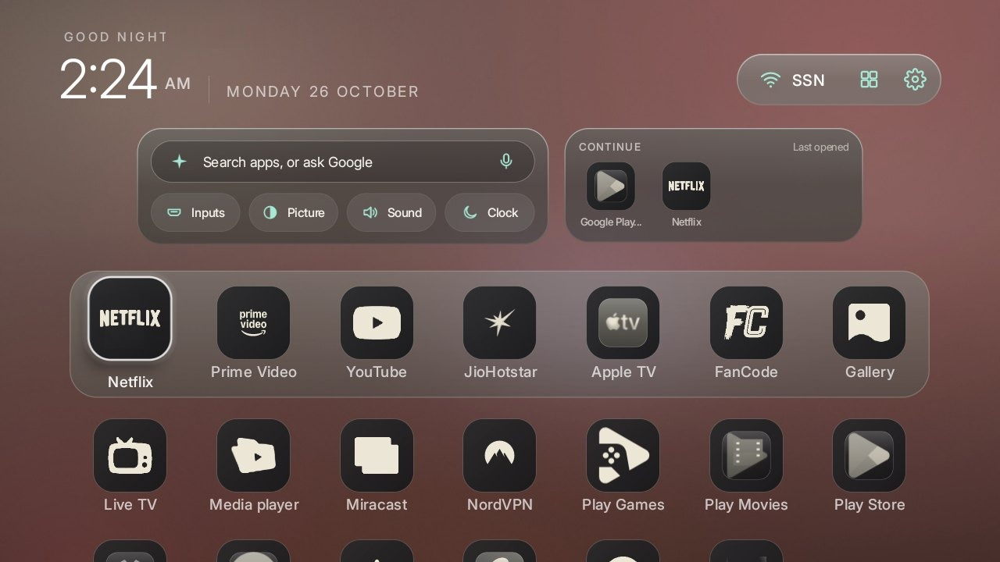
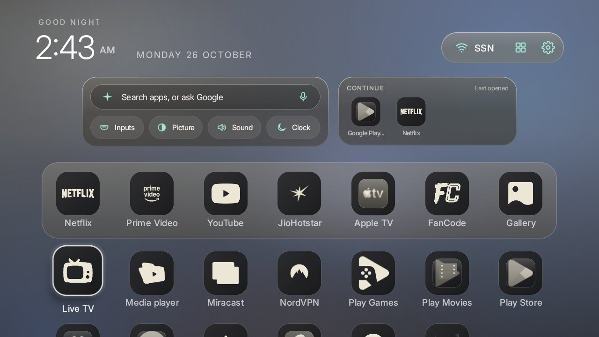
On the TV
Everything you reach for, one press away.
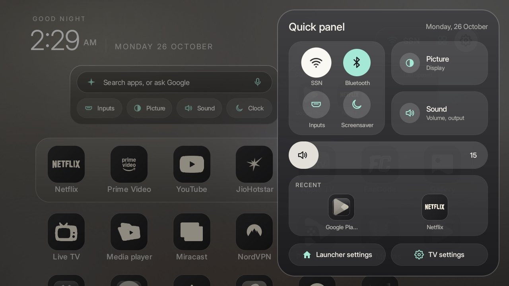
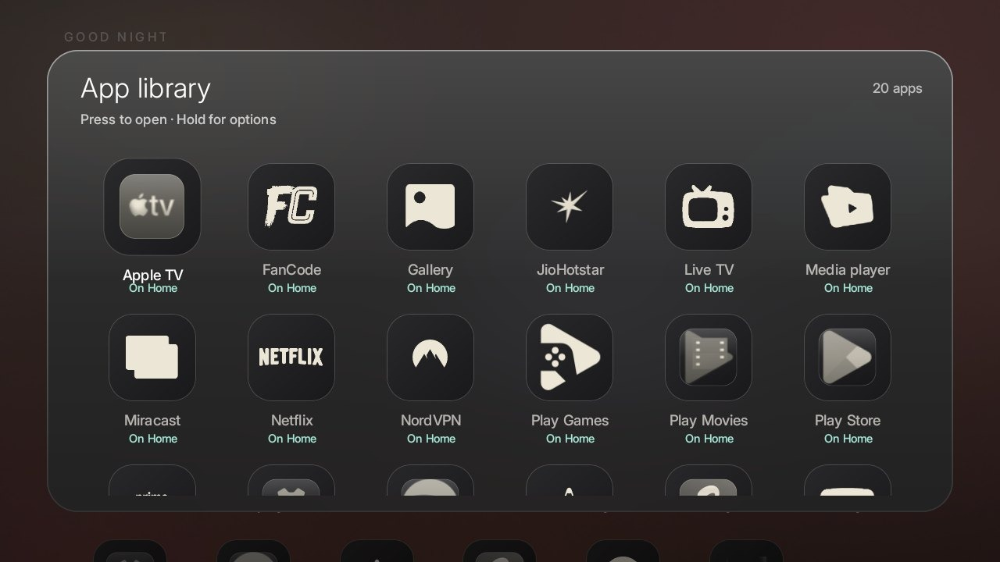
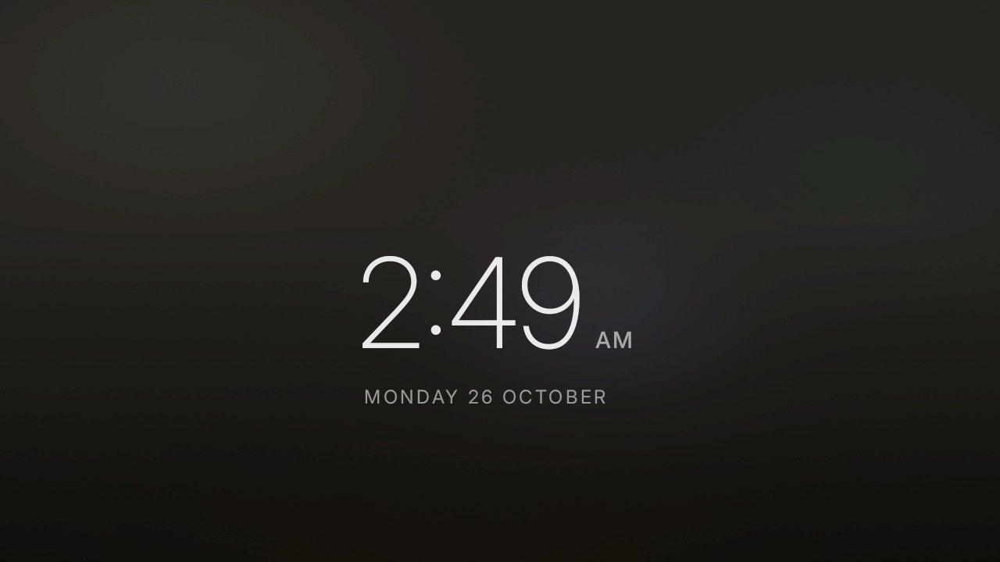
What's in it
A home screen that gets out of the way.
Glass app tiles
Every app in the same tinted squircle, its own mark lifted onto dark glass. No more mismatched banners.
Colour wash
The whole screen takes a soft pastel of the app you focus, and morphs as you move.
Home center
Search or ask Google, then Inputs, Picture, Sound and Clock, next to the apps you opened last.
Now Playing
While music plays, the clock and the track take turns in the corner. The play button takes the album art's colour.
Quick panel
Settings for the things you actually change, over Netflix or anything else that's playing.
Remote shortcuts
The colour buttons open your favourite apps; the App library button opens the library.
Soft motion
Slow fades, a slight tilt and a sweep of light on focus, tuned so a 2 GB TV keeps up.
One-line undo
Nothing is uninstalled. ./uninstall.sh puts the stock home back exactly as it was.
Install
Ten minutes over Wi‑Fi. No cable, no root.
Turn on USB debugging on the TV (Settings → System → About, press OK on Build seven times), then run one command on a computer on the same Wi‑Fi. The installer works through the order Google TV needs.
- ConnectFinds the TV over ADB and checks it runs Android 8 or newer.
- Check your Wi‑FiGoogle TV's setup wizard can own the network it saved. If it does, the installer stops and tells you how to re‑save it, so you never lose Wi‑Fi.
- Hand over HomeOpens Glasshouse, turns the stock home off and makes Glasshouse Home. If Home doesn't land, it puts the stock one back.
- Finish the lookTurns on the remote buttons and Now Playing, then applies the Glasshouse theme.
$ ./install.sh 192.168.1.50 Connecting to 192.168.1.50 ✓ MiTV-AXFU0 · Android 14 ✓ Home is launcherx/.home.HomeActivity Google TV's setup wizard also answers Home ✓ Wi-Fi belongs to the system ✓ Setup wizard off Installing Glasshouse ✓ Home is Glasshouse ✓ Remote buttons on ✓ Now Playing can see what is playing Press Home on your remote.
Glasshouse Pro themes
Three more rooms, lit by the time of day.
Each Pro theme has a morning, an evening and a night wallpaper. Glasshouse switches between them at sunrise, noon and just after sunset, and the frosted glass, icons and accent are tuned to match.
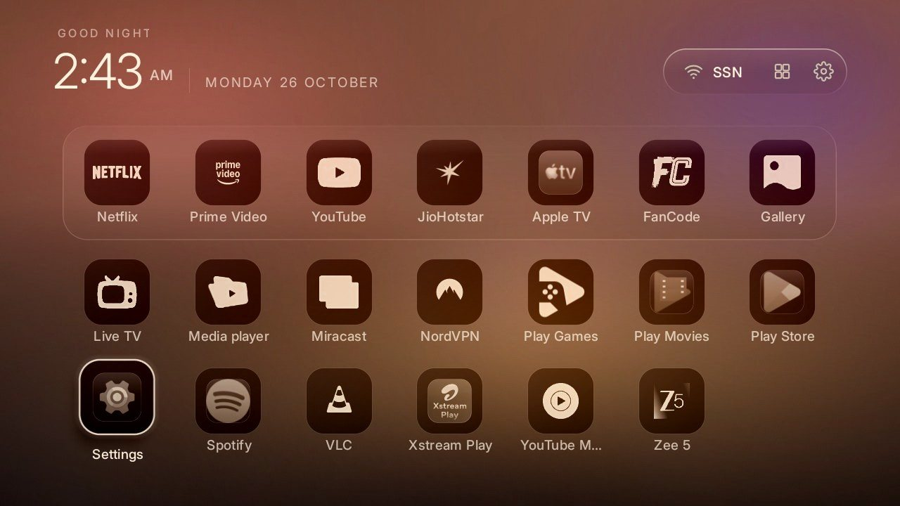
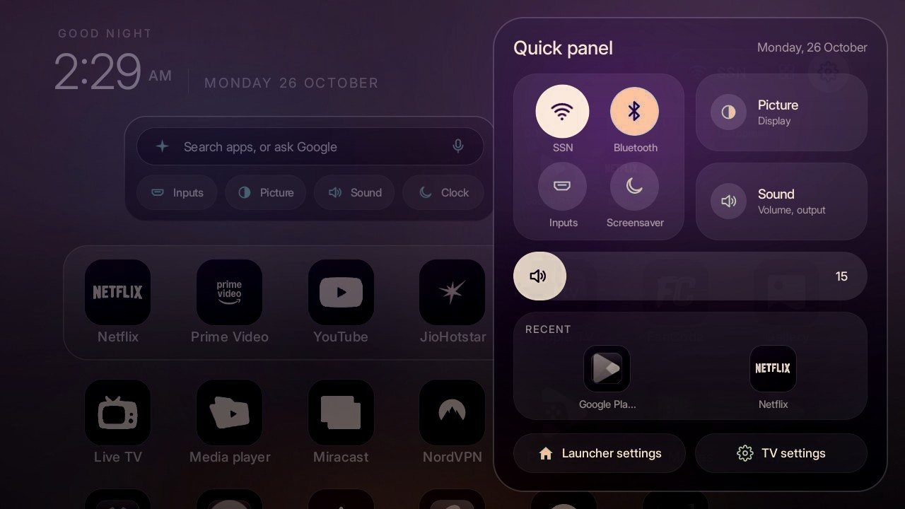
Dusk
Golden hour that never leaves the room. Peach mornings, an amber evening sun low behind the dock, plum nights.
ivory icons · apricot accent · rim focus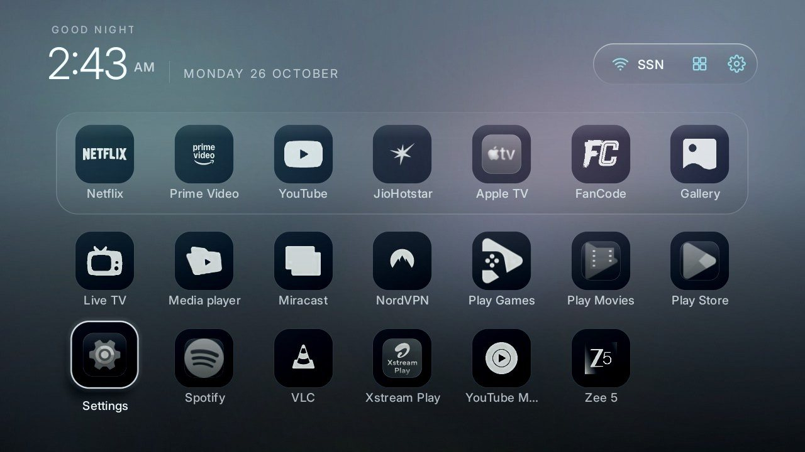
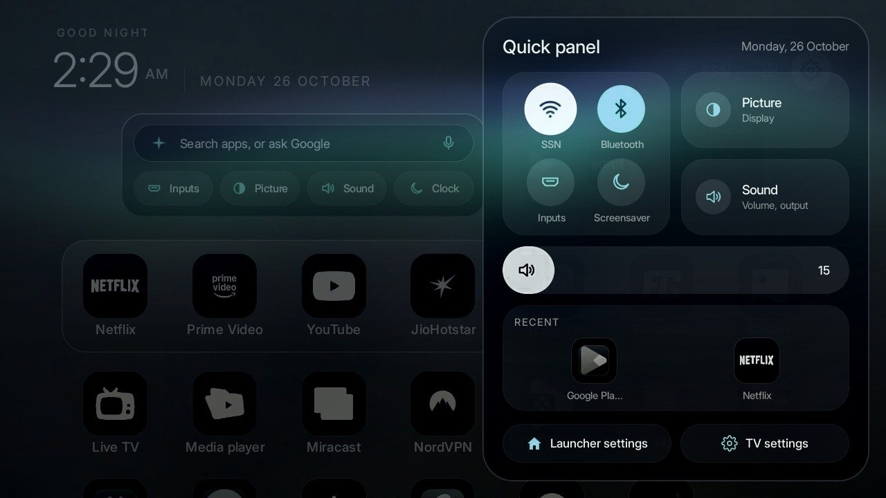
Fjord
Nordic daylight. Morning mist, a slate dusk, and an aurora at night. Six roomier tiles to a row.
frost-white icons · glacier accent · halo focus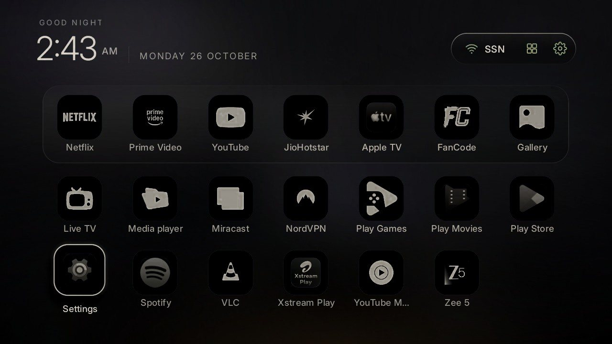
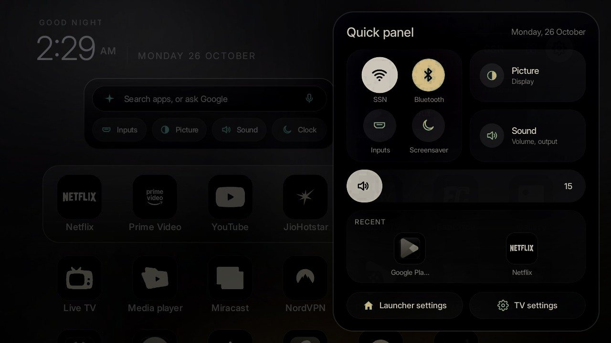
Obsidian
For OLED and dark rooms. Black glass with one streak of light, a thread of gold, and a clock on true black.
stone icons · gold accent · pure-black clockPreviews are simulated on a real Glasshouse screenshot; colours on your TV depend on its panel. Hover or select a theme to see it at night.
Pricing
Free to build. Seven dollars for the extra rooms.
Open source
- Every Glasshouse feature, MIT licensed
- The Glasshouse, Lumen and Default themes
- Build it yourself: needs JDK 17 and the Android SDK
- The same safe installer and undo script
Glasshouse Pro
- Three Pro themes: Dusk, Fjord and Obsidian, each with wallpapers that follow the sun
- A ready-made APK: no Java, no Android SDK, nothing to build
- New Pro themes and fixes for a year
- Email help if your TV gives you trouble
Prices in US dollars; local taxes are worked out at checkout. Pro pays for the time it takes to keep Glasshouse working on new TVs and firmware.
Questions
Before you plug in a cable you don't need.
Will it break my TV?
Nothing is uninstalled or rooted. Glasshouse turns the stock home off with Android's own pm disable-user, and ./uninstall.sh turns it back on. Run the undo before a factory reset, so Google TV's setup wizard is there for it.
Which TVs does it work on?
Android TV and Google TV sets on Android 8 or newer. It's tested on a Xiaomi MiTV‑AXFU0 with Google TV 14, and the launcher it's built on runs on about 290 models. Fire TV doesn't hand Home to other launchers, so it won't work there.
Why does my TV still show its own volume bar?
Some TVs draw the volume bar in the system itself, before any app sees the button. No launcher can restyle that one. The Quick panel's volume slider is in Glasshouse colours.
Why pay if the code is open?
You don't have to: every feature is free. Pro adds the three Pro themes and a ready-made APK for people who'd rather not install Java and the Android SDK. Buying it also pays for fixes when a firmware update changes something.
How do I put a Pro theme on?
Copy the theme folders from the Pro pack into your Glasshouse folder's themes/ and run TV_HOST=<TV IP> tools/theme.sh themes/dusk (or fjord, or obsidian). It takes a few seconds and doesn't touch your apps. Run the same with themes/glasshouse to go back.
Does Glasshouse show ads or collect data?
No. The launcher has no internet permission at all, so it can't send anything anywhere. Now Playing reads what's playing on the TV itself.